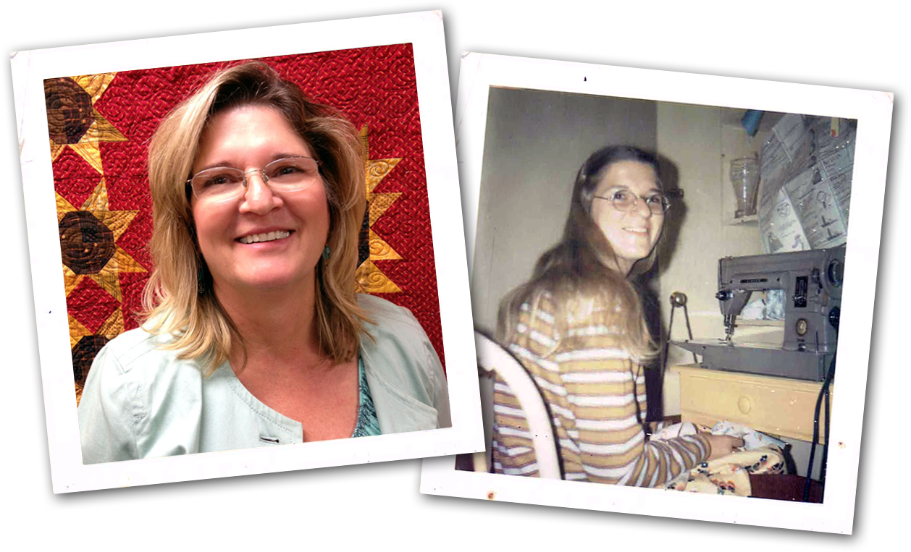

About Karen
Karen’s lifelong passion for sewing led her to quilting. Twenty years later, she took an early retirement to open a quilt shop, Grand Country Quilters, in North San Diego, with her quilting friends. Now she lives the dream spending her days designing patterns, teaching eager quilters, and playing with fabrics.